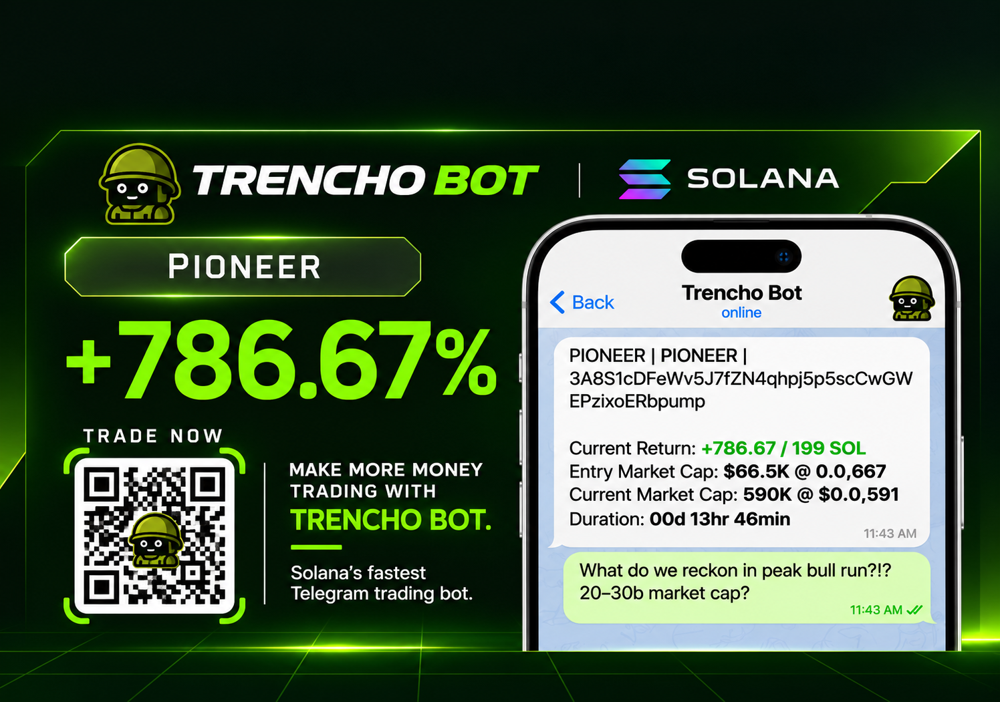
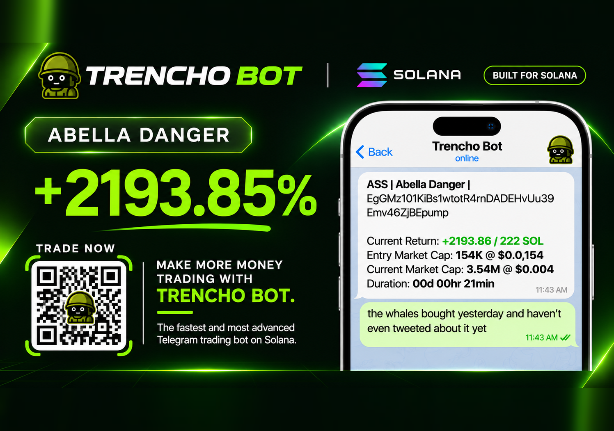
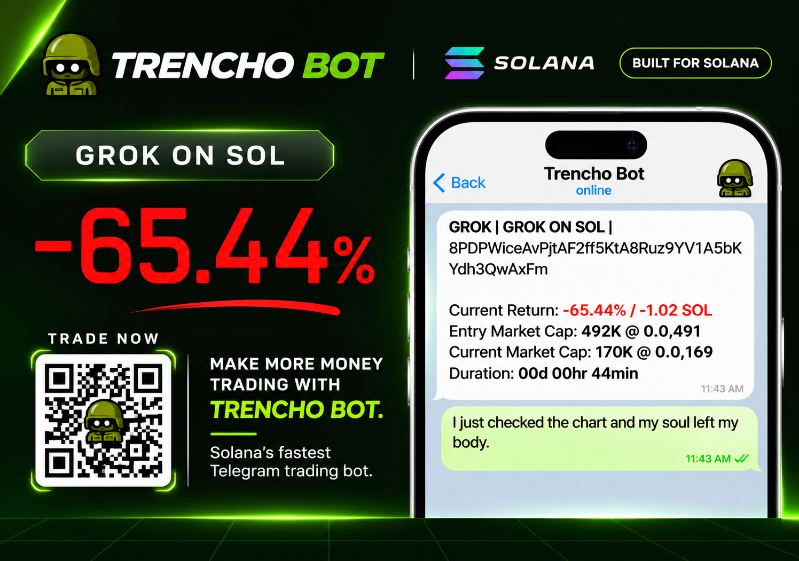
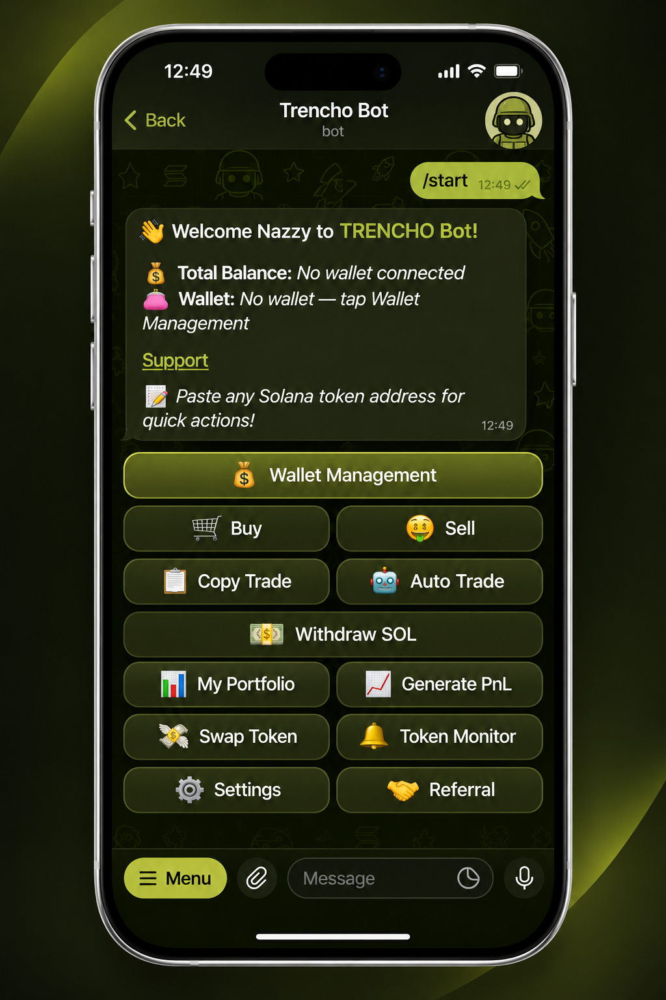

THE MOST EFFICIENT
TRADING BOT FOR
SOLANA.
Trade, automate and manage your Solana moves with speed and precision all from Telegram. Bring your trading tools together in one command centre.

Everything you need.
In one bot.
Explore the tools available in the Trencho Telegram menu. Select a feature to see its dedicated overview.
The Best Telegram Trading Bot,
On Solana.
Create and manage wallets, automate your trades, and keep your trading tools close, all from one Telegram command centre.
Launch Trencho Bot



Your trading journey starts in 30 seconds.
Get started with Trencho on Telegram. Create and manage wallets, explore trading tools, and automate your workflow while staying mindful of transaction details, permissions and risk before you act.
Start Trading Now ▷Questions? We’ve got you.
Get familiar with the tools, understand the workflow, and make informed decisions before you trade.
What is Trencho Bot?
Trencho is a Telegram-based trading toolkit built for the Solana ecosystem. It brings wallet management, token buying and selling, copy trading, automated trading, swaps, portfolio views and token monitoring into one interface.
How do I get started?
Open the official Trencho Telegram bot, follow the prompts in the chat, and review the available wallet options. Take time to understand each step before connecting or creating a wallet and before approving any transaction.
What can I do with Trencho?
The Telegram menu includes wallet management, Buy, Sell, Copy Trade, Auto Trade, Withdraw SOL, My Portfolio, Generate PnL, Swap Token, Token Monitor, Settings and Referral. The exact options and availability are shown in the live bot.
Can Trencho automate trades or copy another wallet?
The bot menu includes Auto Trade and Copy Trade options. Review the controls, wallet or token selection, transaction limits and any available risk settings in the bot before enabling either feature. Automation does not remove market risk or guarantee an outcome.
Is Trencho safe to use? Has it been audited?
Yes. Trencho Bot has undergone a security audit. The audit is intended to help identify potential vulnerabilities and strengthen the security of the platform. Users should still follow safe wallet practices, verify transaction details before approving them, and never share seed phrases or private keys.
Is Trencho non-custodial?
Yes. Trencho Bot is non-custodial: users retain control of their wallets and assets rather than handing custody of their funds to Trencho. Always protect your wallet credentials, review transaction details carefully, and never share your seed phrase or private keys.
Does Trencho guarantee profits?
No trading bot can guarantee profits. Token prices can move quickly, liquidity can change, and transactions can fail or execute at a different price than expected. You can lose some or all of the funds you trade. Only risk what you can afford to lose.
Where can I get updates and support?
Use the official links provided by Trencho. You can open the Trencho Bot or visit the Trencho Trending channel. Be cautious of impersonators and unsolicited direct messages.